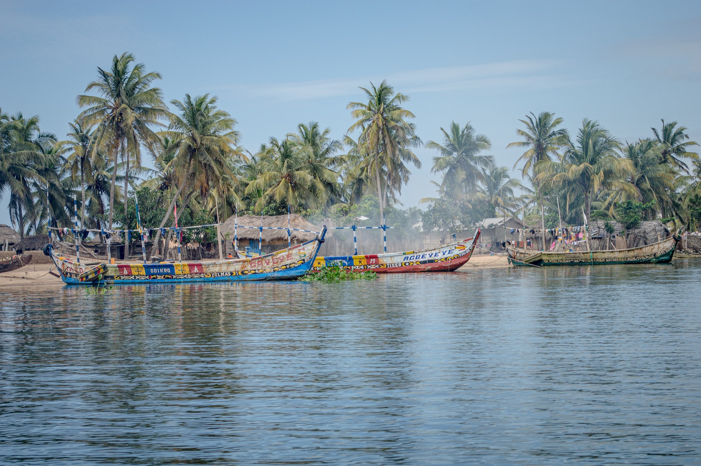
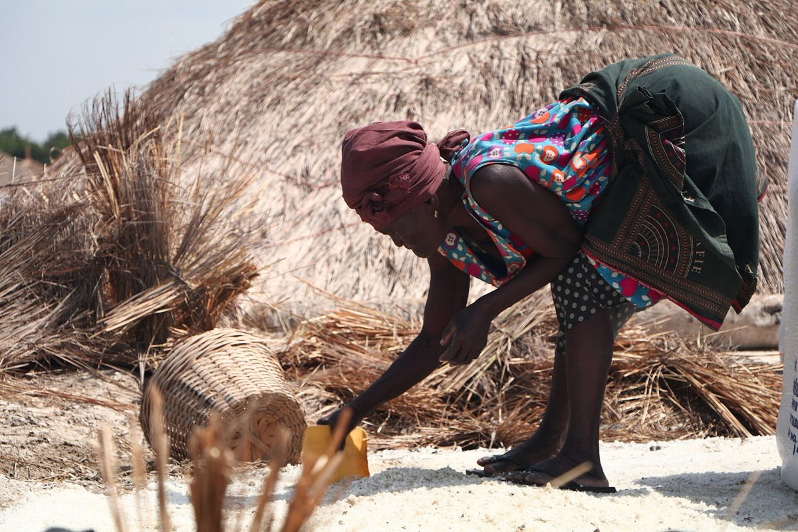
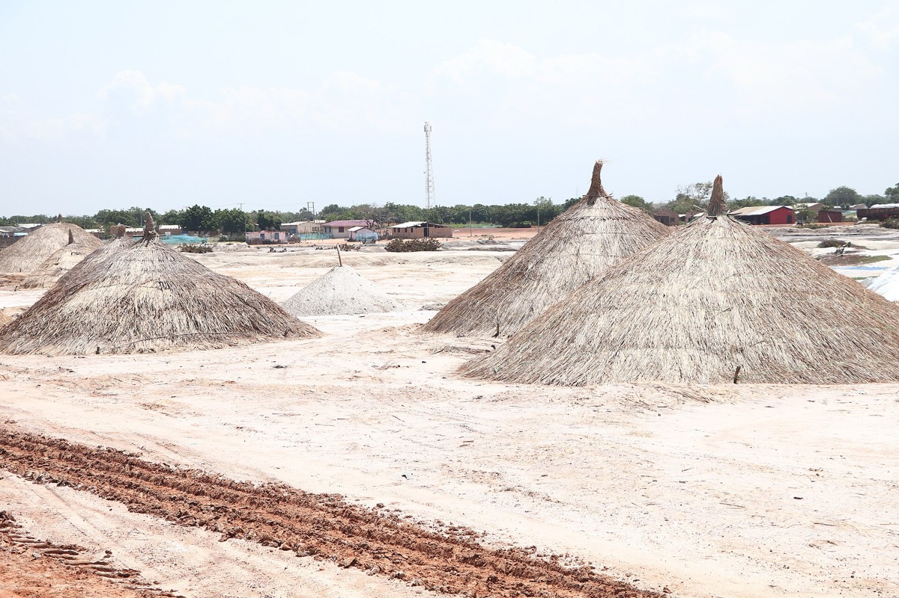
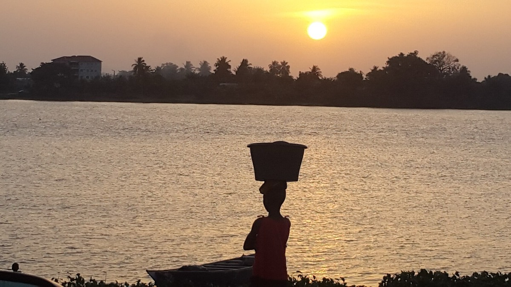

Education
Scholarships, school supplies and reading support so that every child in Ada can finish JHS and SHS, and go further.
- BECE and WASSCE exam support
- Uniforms, books and sandals
- Community reading corners

Ada · Greater Accra Region · Ghana
Ada Community Impact Foundation works alongside the fishing, farming and salt-winning families of Ada to open doors in education, health, clean water and fair livelihoods, and to protect the coast that sustains us.
About Ada
Ada is rich in culture and natural wealth: river, lagoon, ocean and salt. Many households still face rising seas, seasonal income and long distances to schools and clinics. We start with what the community asks for.
The Volta estuary feeds fishing and farming, but coastal erosion keeps taking homes and land along the shore.
Generations of women have won salt from the Songor. We back cooperatives that keep this work safe and fairly paid.
Every August the Asafotufiami festival honours Ada's history. Our work aims to carry that pride forward for the next generation.



Our work
Each programme is led with local chiefs, assembly members, teachers, health workers and the families themselves.
Scholarships, school supplies and reading support so that every child in Ada can finish JHS and SHS, and go further.
Outreach days that bring screening, maternal care and health education to island and lagoon-side communities.
Boreholes, rainwater harvesting and water-point repairs so families spend less time fetching water.
Training, tools and small grants for fisherfolk, farmers, salt winners and young entrepreneurs.
Replanting mangroves and keeping beaches clean to slow erosion and protect fish nurseries.
Goals by 2030
Clear targets keep us honest. We will report progress against each one, every year.
These are our targets for 2030. We will report progress against each one, every year.
News & events
Updates from our programmes, upcoming events and stories from the families we work with.
Leadership
Our volunteer board guides the foundation's work, keeps its finances accountable, and stays close to the families we serve in Ada.
Donate
Give once or every month from anywhere in the US. Choose an amount to see what it can do on the ground.
Ada Community Impact Foundation is a registered 501(c)(3) nonprofit, so your gift is tax-deductible to the extent allowed by law. Email us after you give and we will send a receipt for your records.
Send $50 to this number in your bank's Zelle app. Most bank apps let you set a Zelle payment to repeat every month. For a tax receipt, email ACIF.org@gmail.com with your name, the date and the amount.
Get involved
Teachers, nurses, builders, students and people of Ada living abroad: there is a place for you. Tell us how you would like to help.